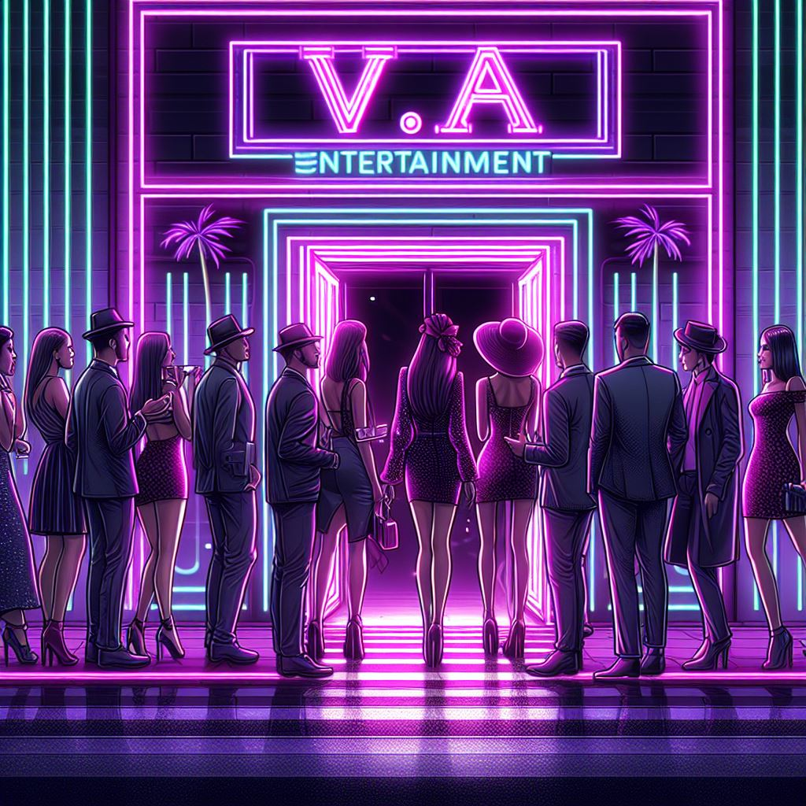

V.A entertainment
V.A entertainment é uma empresa de bpop onde montaram vários grupos como: BlackDragons, New Crias, The Drakes, KDTREYY, Dolletes e PurpleWhite. V.A entertainment foi criada em 1998 com a influência de dois colegas onde queriam apresentar as suas artes onde eles demonstravam em dança e em canto,onde estreou-se com o grupo BlackDragons onde atualmente está sendo o grupo mais famoso da empresa.
